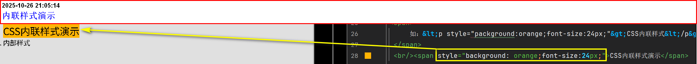
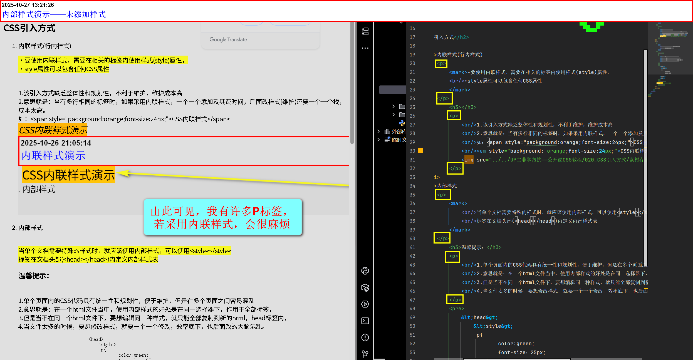
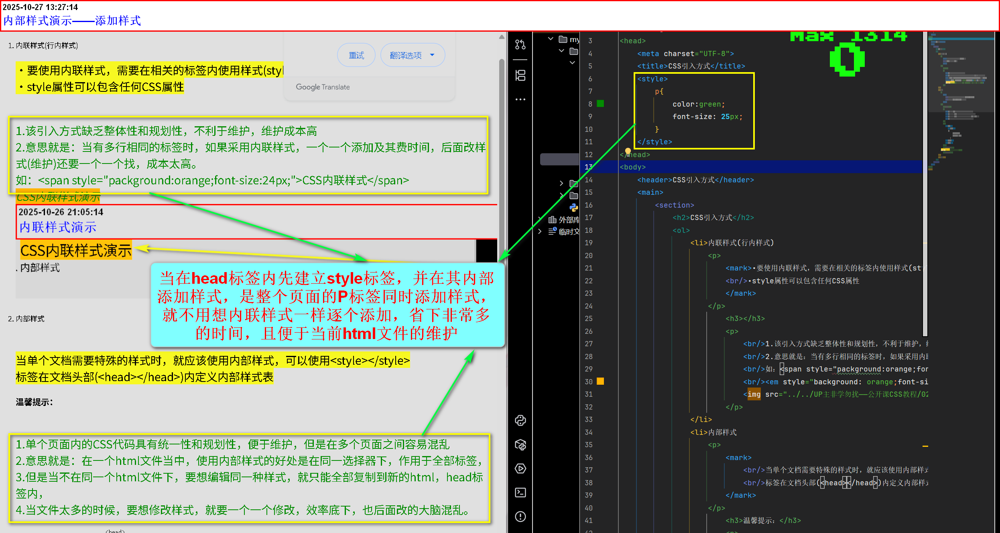
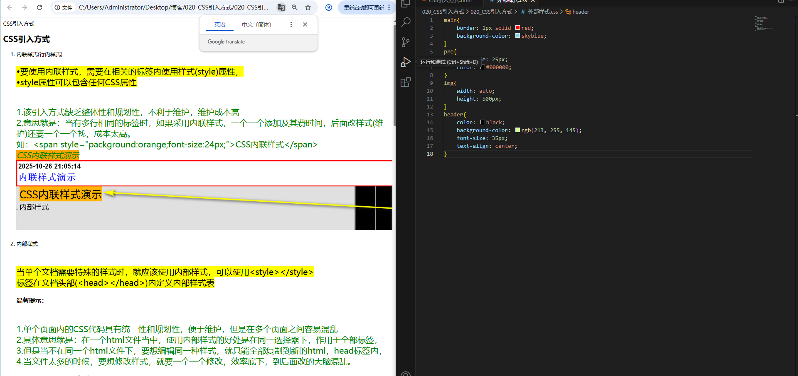
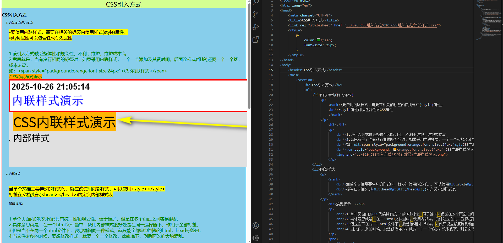

CSS引入方式
- 内联样式(行内样式)
•要使用内联样式，需要在相关的标签内使用样式(style)属性，
•style属性可以包含任何CSS属性
1.该引入方式缺乏整体性和规划性，不利于维护，维护成本高
2.意思就是：当有多行相同的标签时，如果采用内联样式，一个一个添加及其费时间，后面改样式(维护)还要一个一个找，成本太高。
如：<span style="packground:orange;font-size:24px;">CSS内联样式</span>
CSS内联样式演示  - 内部样式
当单个文档需要特殊的样式时，就应该使用内部样式，可以使用<style></style>
标签在文档头部(<head></head>)内定义内部样式表温馨提示：
1.单个页面内的CSS代码具有统一性和规划性，便于维护，但是在多个页面之间容易混乱
2.具体意思就是：在一个html文件当中，使用内部样式的好处是在同一选择器下，作用于全部标签，
3.但是当不在同一个html文件下，要想编辑同一种样式，就只能全部复制到新的html，head标签内，
4.当文件太多的时候，要想修改样式，就要一个一个修改，效率底下，到后面改的大脑混乱。<head> <style> p{ color:green; font-size：25px; } </style> </head>没有使用内部样式时：
使用内部样式时：
当在head标签内先建立style标签，并在其内部添加样式，是整个页面的P标签同时添加样式， 就不用想内联样式一样逐个添加，省下非常多的时间，且便于当前html文件的维护。 
- 外部样式非常推荐
当样式需要应用于很多页面时，外部样式表时理想的选择。
在使用外部样式表的情况下，可以通过改变一个文件(css)来改变整个站点的外观
每个页面使用<link>标签链接到样式表。
<link>标签在文档头部(即在<head>标签内部)在外部建立CSS文件，并编辑样式
引入CSS文件，查看效果
